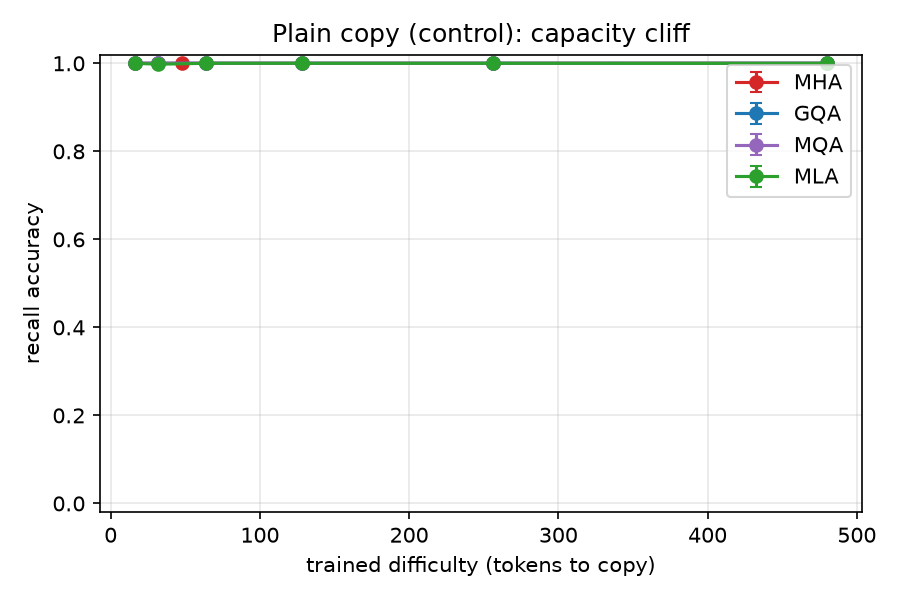
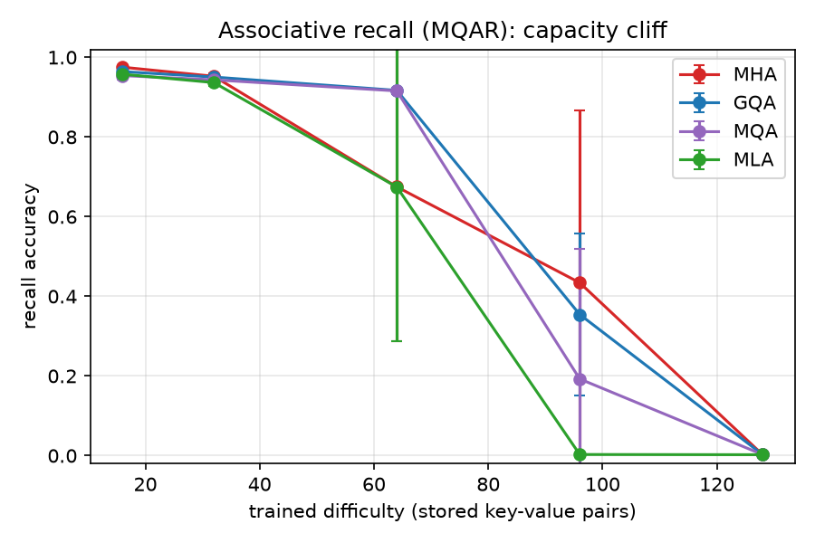
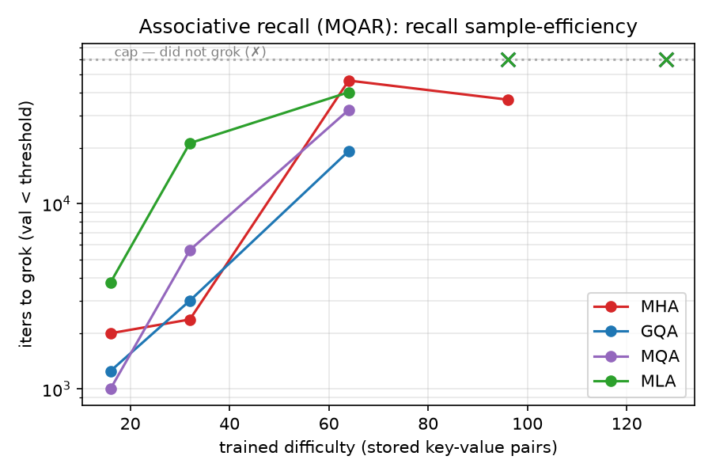
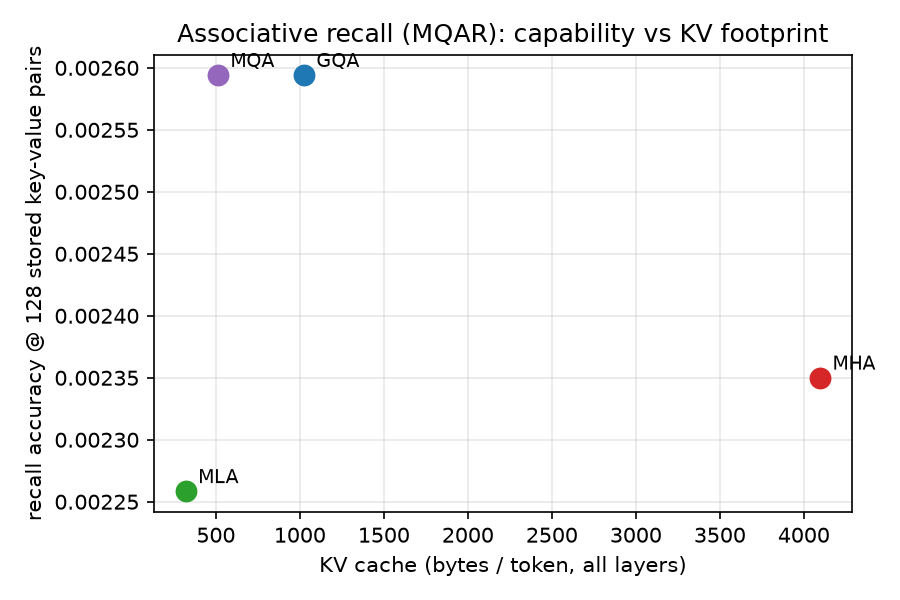
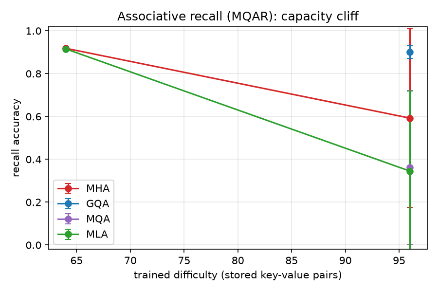
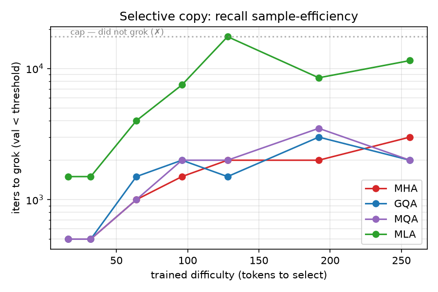
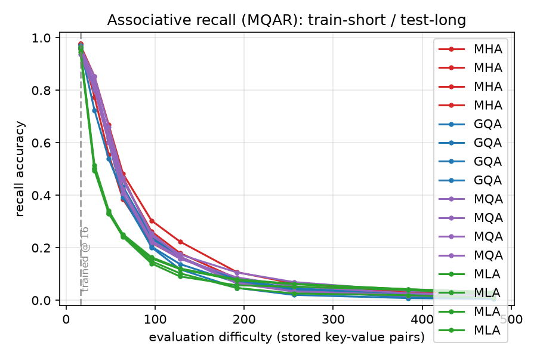
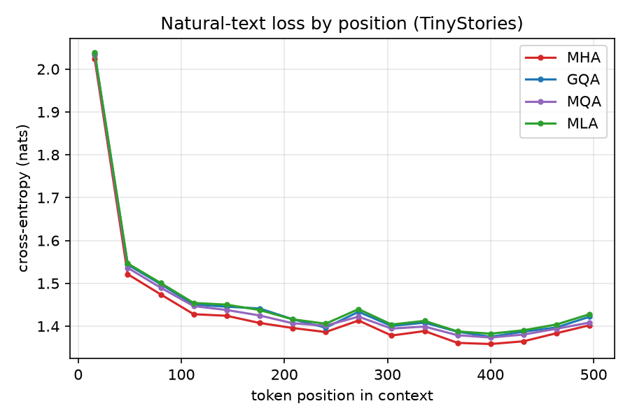

Attention, Controlled · Paper 2 of the series
Paper 1 showed that swapping the attention mechanism to shrink the KV cache costs almost nothing in language-model perplexity—MHA, MQA, GQA, and MLA land within ~4.6% of one another at 124M parameters. But perplexity averages over a whole sequence; it can hide a capability that only a handful of tokens exercise. Here we stress the same four variants on synthetic recall under controlled difficulty, holding the backbone, optimizer, data generator, and token budget fixed and varying only the attention module. Plain copy and selective copy are solved by every variant at every difficulty, regardless of cache size. But multi-query associative recall (MQAR) exposes a capacity cliff ordered by KV-cache width: past ~64 stored key–value pairs accuracy collapses in cache order (MHA > GQA > MQA > MLA), and at 96 pairs only the two largest caches can still escape—and only given enough optimization budget. Two confound controls sharpen the claim. (1) The cliff is real: doubling the iteration budget does not rescue the smallest caches, so the floor—which variants can never solve a difficulty—is set by cache size. (2) But much of the cliff's apparent steepness at the original budget is a learning-rate-schedule artifact, not pure capacity: a gentler cosine recovers grokking for the larger caches within the original budget in 8 of 10 borderline cells. On natural text, finally, the position-wise loss curves of all four variants are nearly identical—the cliff lives in the synthetic stress test, which is exactly why Paper 1's headline perplexity could not see it.
A single averaged number is a poor instrument for a capability that lives in the tail. Paper 1 measured the four attention variants on the thing language models are trained for—next-token prediction—and found the KV-cache reduction nearly free: cutting the cache 5.6–12× cost at most ~4.6% perplexity, and MLA even Pareto-dominated GQA. The natural worry is that perplexity is the wrong lens for the thing a small cache might actually break: retrieval. Most tokens in natural text are predictable from local context; the rare token that requires reaching back to a specific earlier fact contributes almost nothing to the mean. If a smaller cache loses exactly that ability, perplexity would barely flinch.
So we go looking for the break directly. We train the same four variants on synthetic tasks with a tunable difficulty knob and ask a sharper question than "what is the average loss": at what difficulty does each variant stop being able to do the task at all, and is that ceiling set by the KV cache? The headline probe is multi-query associative recall (MQAR): the model sees a list of key–value pairs followed by queried keys and must emit the matching values. Difficulty is the number of stored pairs that compete for the same cache. We pair it with two controls—plain copy (positional, no content addressing) and selective copy (content-gated copying)—and bridge back to natural language with a position-decomposed loss on the Paper 1 TinyStories checkpoints.
The model is deliberately small so that the cache, not raw capacity, is the
binding constraint and so the whole sweep runs on one consumer GPU: a 4-layer,
256-wide, 8-head GPT with the identical pluggable-attention backbone, RoPE, and
SwiGLU MLP from Paper 1. Only --attn changes. At this size the
per-token KV cache (all layers, bf16) and parameter counts are:
| Variant | Params | KV bytes/token | vs MHA |
|---|---|---|---|
| MHA | 3.34M | 4,096 | 1.0× |
| GQA ($g{=}2$) | 2.95M | 1,024 | 4.0× |
| MQA | 2.89M | 512 | 8.0× |
| MLA | 2.92M | 320 | 12.8× |
The cache ordering MHA > GQA > MQA > MLA is the same as the 124M model; only the absolute sizes shrink with depth and width. Every run trains to a fixed 60,000-iteration budget with an early-stop trigger when validation loss crosses a threshold—the synthetic tasks sit on a high plateau and then "grok" with a near-vertical drop, so the crossing iter doubles as a sample-efficiency measurement. Each (variant × difficulty) cell is run over four seeds (1234, 1337, 2024, 31337); reported accuracy is the mean over seeds at the best checkpoint. MQAR difficulty sweeps {16, 32, 64, 96, 128} stored pairs.
Before reading anything into a recall gap, we confirm that cache width does not bound a task that needs no content addressing. Plain copy—emit the input sequence back—is solved at 1.00 accuracy by all four variants at every length from 16 to 480 tokens, each grokking within the first 500 iterations. A copy head only needs to attend by position, which even the single shared latent of MLA supports trivially. This is the baseline that makes the MQAR result interpretable: any gap there is about content-addressed lookup under competition, not about moving tokens around.

Associative recall tells a completely different story. Accuracy is near-ceiling for all variants while the pairs are few, then falls off a cliff—and the cliff is ordered by cache size.
| Variant | KV B/tok | 16 | 32 | 64 | 96 | 128 |
|---|---|---|---|---|---|---|
| MHA | 4,096 | 0.98 | 0.95 | 0.67 | 0.43 | 0.00 |
| GQA | 1,024 | 0.96 | 0.95 | 0.92 | 0.35 | 0.00 |
| MQA | 512 | 0.95 | 0.94 | 0.92 | 0.19 | 0.00 |
| MLA | 320 | 0.96 | 0.94 | 0.67 | 0.00 | 0.00 |
Mean recall accuracy over 4 seeds, 60k-iter budget. Difficulty = stored key–value pairs.
Three regimes are visible. Up to 32 pairs the task is easy for every cache (all ≥0.94). At 96 pairs the variants separate cleanly in cache order: MHA 0.43 > GQA 0.35 > MQA 0.19 > MLA 0.00. At 128 pairs everyone hits the floor (0.00)—a universal ceiling of a model this small. The 64-pair column looks anomalous (GQA/MQA at 0.92 beat MHA/MLA at 0.67), and resolving that anomaly is the job of §5; it turns out to be an optimization artifact, not a capacity inversion.

The cliff is just as visible in sample efficiency: the iterations needed to grok climb steeply with difficulty and then go to infinity (the cell never solves within budget). MLA grokks 64 pairs only after ~40k iters and never reaches 96; the larger caches grok sooner and reach further.

Reframed against the cache axis at the hardest solvable difficulty, the result is the mirror image of Paper 1's quality/efficiency Pareto front: there, spending less cache was nearly free; here, spending less cache buys strictly less recall.

A fixed-budget sweep conflates two things: a variant might fail a difficulty because it cannot represent the task (capacity) or because it simply did not finish learning it in 60k iters (budget). We disentangle them with two controls run locally on the RTX 4080.
Re-running every cap-limited cell at a 2× (120k) budget separates budget-limited cells (they flip to solved) from capacity-limited cells (they stay at zero). The 64-pair anomaly evaporates: the MHA and MLA dips to 0.67 were single un-groked seeds, and at 120k every variant reaches ~0.90 at 64 pairs (g4/4). The headline U-shape was a budget artifact. At 96 pairs, by contrast, the extra budget is cache-gated:
| Variant | KV B/tok | acc @60k (grok/4) | acc @120k (grok/4) | verdict at 96 pairs |
|---|---|---|---|---|
| MHA | 4,096 | 0.43 (1/4) | 0.66 (3/4) | escapes (budget) |
| GQA | 1,024 | 0.35 (0/4) | 0.90 (4/4) | escapes (budget) |
| MQA | 512 | 0.19 (0/4) | 0.36 (1/4) | mostly capacity-bound |
| MLA | 320 | 0.00 (0/4) | 0.35 (0/4) | capacity-bound (0/4) |
The dividing line is sharp: caches ≥1024 B (MHA, GQA) escape 96 pairs given budget; caches ≤512 B (MQA, MLA) do not. GQA fully recovers (4/4 grok, 0.90), MHA mostly (3/4); MQA crosses the threshold in only one of four seeds and MLA in none—even at double the budget. So the floor of the cliff—the difficulty a variant can never reach—is genuinely set by cache size, not by how long we train.

"2× budget" changes two things at once: more iterations and a gentler
cosine decay (a 120k schedule sustains a higher learning rate at every iter < 60k).
To separate them we re-ran the borderline cells for the original 60k iterations but
under the 120k LR shape (max_iters=60000, lr_decay_iters=120000),
so the only change from the canonical run is a gentler decay. The result is
striking: 8 of 10 cells that the 2× budget rescued already grok within
the original 60k budget once the LR is gentler (the steep-schedule baseline
groks 0/10). Only two cells genuinely need iterations beyond 60k.
| cell | steep 60k | gentle 60k | gentle 120k | grok≤60k? | cause |
|---|---|---|---|---|---|
| gqa p96 s1234 | — | grok@43k | grok@48k | yes | LR-shape |
| gqa p96 s1337 | — | — | grok@47.5k | yes | LR-shape |
| gqa p96 s2024 | — | grok@45.5k | grok@70.5k | yes | LR-shape |
| gqa p96 s31337 | — | — | grok@86k | no | extra-iters |
| mha p64 s2024 | — | grok@50k | grok@22k | yes | LR-shape |
| mha p64 s31337 | — | grok@60k | grok@23.5k | yes | LR-shape |
| mha p96 s1234 | — | — | grok@53k | yes | LR-shape |
| mha p96 s2024 | — | grok@42.5k | grok@37k | yes | LR-shape |
| mla p64 s2024 | — | — | grok@57k | yes | LR-shape |
| mqa p96 s31337 | — | — | grok@104.5k | no | extra-iters |
“—” in the steep/gentle-60k columns means the cell did not grok within 60k iters. “grok≤60k? = yes” if either gentle sample crossed before 60k.
So the apparent steepness of the original cliff is predominantly an LR-schedule effect, not iteration count: the canonical 60k sweep was, in part, starving the larger caches with too steep a decay rather than measuring their capacity. This does not move the floor—MQA and MLA at 96 pairs stay capacity-bound under either schedule—but it does mean the precise position of the cliff for the rescuable variants is a property of the optimizer as much as the architecture.
torch.compile
on a near-vertical transition shifts the crossing by 5k–36.5k iters
between two otherwise-identical runs (e.g. mha p64 s31337 above: 60k vs
23.5k). We therefore never read a conclusion off a single grok-iter; the stable,
reported metrics are the binary “did it grok within budget” and the
best-checkpoint accuracy.
Between trivial positional copy and adversarial associative recall sits selective copy: copy only the marked tokens, in order. Every variant solves it at every difficulty (accuracy 0.88–0.99 from 16 to 256 tokens to select)—content gating alone does not need a wide cache. But the cost shows up in sample efficiency: the three larger caches grok in 500–3500 iters, while MLA needs 1.5k–17.5k—up to ~8× more at the harder settings. The narrow latent does not prevent MLA from learning selective copy; it makes it the slowest to get there—a milder version of the optimization penalty that, on the harder MQAR task, becomes an outright capacity ceiling.

Training one model at a fixed difficulty and evaluating it at others probes generalization beyond the trained load. No variant extrapolates strongly: accuracy holds up to roughly the trained difficulty and then decays. The decay is broadly similar across caches—it is a length-generalization limit of the backbone/RoPE more than a cache effect—with one consistent exception: trained on the easiest setting, MLA degrades fastest (it drops to ~0.50 by double the trained difficulty where the others hold ~0.80). The same narrow latent that compresses the cache also carries the least margin for loads it was not trained on.

Does any of the synthetic cliff show up on real language? We decompose the held-out cross-entropy of the Paper 1 TinyStories checkpoints by token position—the metric the headline perplexity averaged away, and the one most likely to reveal a long-range advantage. It does not separate the variants. All four fall from ~2.03 nats at position 16 to ~1.40 nats at position 496, and the spread at the long end is just ~0.026 nats (MHA 1.402, MQA 1.408, GQA 1.422, MLA 1.428).

This is the reconciliation. The recall cliff is not in tension with Paper 1's “cache reduction is nearly free”—it is the precise condition under which that verdict stops holding. Free for next-token prediction on natural text; not free when the task is dense associative recall at the edge of the model's capacity.
Put the two papers together. Paper 1: cutting the KV cache 5.6–12× costs ≤4.6% perplexity and MLA Pareto-dominates GQA on the quality/efficiency front. Paper 2: that same cut does cost capability on dense associative recall, and it costs it in cache order—up to ~32 pairs it is free for everyone; at 64 pairs it is free given budget; at 96 pairs it is cache-gated, recoverable only for caches ≥1024 B; at 128 pairs nobody in this small model can do it. The compression that makes MLA a great deal for language modeling is the very thing that gives it the least associative-recall headroom.
Two caveats keep the claim honest. First, the cliff's location for the rescuable variants is partly an optimizer property—a gentler LR schedule moves it—so a fixed-budget capacity table should be read as an upper bound on difficulty, not a hard architectural limit. The floor, however (which variants cannot solve a difficulty at any budget or schedule we tried), is robustly cache-ordered. Second, this is a small model on a single difficulty axis; the absolute cliff positions will move with depth, width, and head count, even if the cache ordering does not. A practitioner takeaway nonetheless: if your workload leans on heavy in-context retrieval near the model's limit, the KV cache you can afford is also the recall ceiling you can reach—and it is worth tuning the schedule before concluding a variant simply cannot.
Everything runs on one consumer GPU. Code: github.com/bryanvine/mla-gpt.
uv sync bash scripts/sweep_recall.sh # §3–4,6–7 synthetic sweep (4 seeds) uv run python scripts/eval_recall.py --glob 'runs/recall_*' --out runs/recall_eval bash scripts/recall_cap120k.sh # §5.1 2× budget control uv run python scripts/recall_cap_compare.py bash scripts/recall_lrctrl.sh # §5.2 LR-shape vs extra-iters uv run python scripts/recall_lrctrl_compare.py
A single base config (configs/recall_base.yaml) trains every variant by
changing only --attn; the sweep, the 2×-budget control, and the
LR-shape control share that config so the attention mechanism stays the sole
independent variable.
The full recall study—the synthetic sweep and both confound controls—runs locally on a single consumer RTX 4080 Super (16 GB). The 124M-parameter checkpoints used for the natural-text bridge (§8) come from Paper 1, whose headline sweep ran on PACE-ICE, Georgia Tech's instructional and research computing cluster; we gratefully acknowledge PACE-ICE for that GPU time.
Part of Attention, Controlled. Built from scratch in PyTorch; MQAR follows the associative-recall probes of Arora et al. (2023). © 2026 Bryan Vine, MIT-licensed.